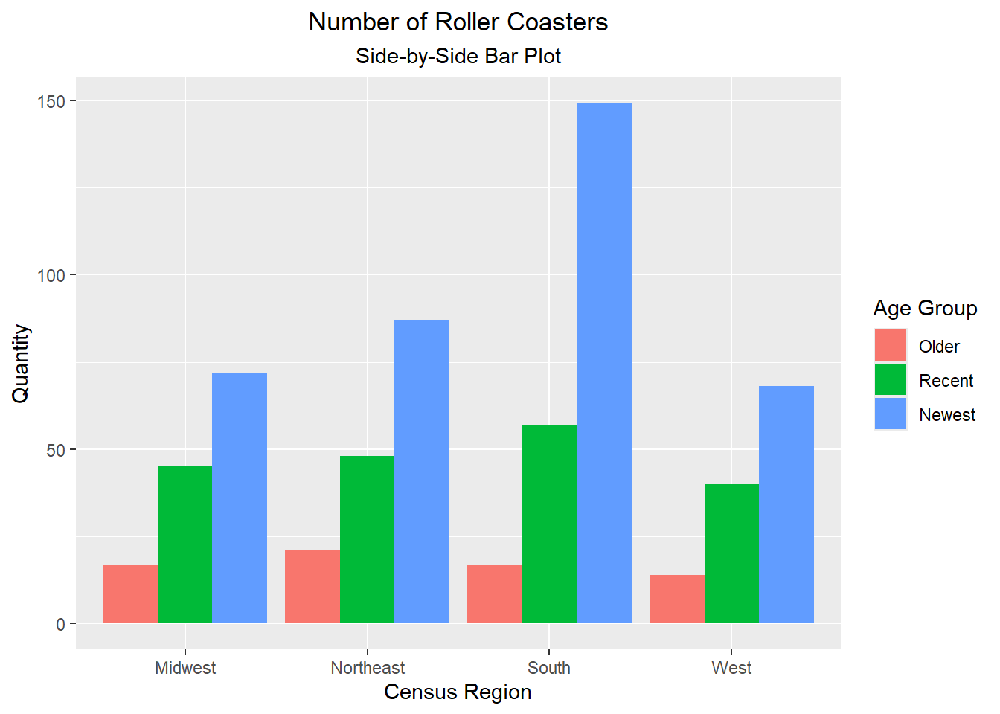

This homework practices with application programming interfaces (APIs) and exploratory data analyses (EDAs).
Task 1: Querying an API and a Tidy-Style Function
This task makes use of the website newsapi.org. Having registered for a key using my NCSU email, we now do the following.
Use GET() from the httr package to return information about a topic I am interested in recently (i.e., within the past \(30\) days, per the free account limit): the Ebola virus outbreak in the Democratic Republic of Congo (DRC) and Uganda.
List of 3
$ status : chr "ok"
$ totalResults: int 3311
$ articles :'data.frame': 50 obs. of 8 variables:
..$ source :'data.frame': 50 obs. of 2 variables:
.. ..$ id : chr [1:50] NA NA NA NA ...
.. ..$ name: chr [1:50] "BBC News" "BBC News" "BBC News" "BBC News" ...
..$ author : chr [1:50] NA NA NA NA ...
..$ title : chr [1:50] "'Speed, money and compassion' - lessons from an Ebola survivor and other experts" "Red Cross volunteers die from suspected Ebola in DR Congo" "'Ebola has tortured us': Fear grips eastern DR Congo as deadly virus spreads" "At least six Americans exposed to Ebola in DR Congo, US media report" ...
..$ description: chr [1:50] "Those caught up in West Africa's Ebola outbreak a decade ago on how best to tackle the current epidemic." "They are thought to have caught the virus before the outbreak was identified, the Red Cross says." "The health minister has acknowledged that medics are playing catch-up with the virus after being slow to detect it." "One of the six Americans believed to have been exposed is experiencing symptoms, according to media reports." ...
..$ url : chr [1:50] "https://www.bbc.com/news/articles/cj3p2rdx0l8o" "https://www.bbc.com/news/articles/c759knxln0wo" "https://www.bbc.com/news/articles/cvgzj0pqpyyo" "https://www.bbc.com/news/articles/cq6pz60p996o" ...
..$ urlToImage : chr [1:50] "https://ichef.bbci.co.uk/news/1024/branded_news/68b3/live/8445c700-55d0-11f1-8b8c-6d33e1d5abb6.jpg" "https://ichef.bbci.co.uk/news/1024/branded_news/f4e9/live/1fde0380-56bc-11f1-89a3-d1f559421220.jpg" "https://ichef.bbci.co.uk/news/1024/branded_news/c8bb/live/9d165df0-5394-11f1-82e5-bb1c743931bd.jpg" "https://ichef.bbci.co.uk/news/1024/branded_news/3195/live/9d886d70-5293-11f1-8a13-e989d3b4b6c8.jpg" ...
..$ publishedAt: chr [1:50] "2026-05-22T23:07:41Z" "2026-05-23T17:15:09Z" "2026-05-19T18:05:26Z" "2026-05-18T10:07:57Z" ...
..$ content : chr [1:50] "Three days after the funeral, he fell sick with Ebola, finding himself turning from healthcare worker to patien"| __truncated__ "The same day, the African Centres for Disease Control warned 10 other countries on the continent were at risk o"| __truncated__ "Following a visit to Ituri province, the epicentre of the outbreak, over the weekend, Congolese Health Minister"| __truncated__ "The disease spread to a number of countries within and outside of West Africa, including Guinea, Sierra Leone, "| __truncated__ ...
Lastly, we construct a function allowing a user to more easily query this API by topic, earliest_date, and API_key. For this problem, we will return a vector of the article titles.
[1] "AI leaders call for tougher protections against AI-aided bioweapons"
[2] "Microsoft AI chief walks back comments about AI taking over white-collar work"
[3] "Google’s AI search is so broken it can ‘disregard’ what you’re looking for"
[4] "YouTube is putting AI labels where you’ll actually see them"
[5] "The Endless AI guitar pedal has potential"
[6] "Apple announces visionOS 27 with Siri AI"
[7] "Let us filter AI slop, you cowards"
[8] "We Asked the ‘Future of Truth’ Author to Explain How He Used AI. It Didn’t Go Well"
[9] "Spotify Studio’s AI agent creates a daily podcast just for you"
[10] "Pope Leo calls for being ‘profoundly human’ in the age of AI"
[11] "Apple’s best AI idea looks a lot like vibe coding"
[12] "Apple wants Europe to blink"
[13] "Apple’s new Siri AI knows when to shut up"
[14] "The AI Era Is Creating a Bug Hunting Arms Race"
[15] "The Gulf’s AI Boom Has an Undersea Cable Problem"
Finally, let us query, within the past week, on the “NBA”.
news_search("NBA", "2026-06-08")
[1] "Five people injured in stabbing at New York City's Penn Station"
[2] "Knicks fans go wild as New York team makes biggest comeback in NBA Finals history"
[3] "Where to watch Knicks vs Spurs game 5: NBA Finals live stream, channel, odds, venue"
[4] "Sports are pricing out the fans who made them rich"
[5] "WATCH: NY Knicks are 'playing like a veteran team': Analyst"
[6] "Taylor Swift, Michael J. Fox and more attend Knicks-Spurs NBA Finals Game 4 at MSG"
[7] "San Antonio Spurs win 115-111 victory over New York Knicks in Game 3"
[8] "WATCH: Game 4 could reshape the NBA Finals narrative"
[9] "WATCH: The historic 2026 NBA Finals and what comes next"
[10] "Suspect sought after teen beaten into coma near MSG after Knicks' Game 4 win: Police"
[11] "Pedestrian traffic restricted in Midtown Manhattan as Trump's NBA Finals trip spurs intense security"
[12] "Photos: Knicks Fans Celebrate Their NBA Championship"
[13] "OG Anunoby's Accidental Instagram Live From The Knicks Locker Room Has Me Absolutely Dying Because We've All Been There"
[14] "WATCH: New York coffee shop goes viral with Knicks spirit"
[15] "New York hosts San Antonio with 2-1 series lead"
[16] "WATCH: Police on alert for malicious activity as Knicks host NBA Finals"
[17] "WATCH: Jalen Brunson and dad on unbreakable father-son bond through basketball"
[18] "WATCH: What just happened? Inside the New York Knicks' historic comeback"
[19] "WATCH: Chase lights up New York City for the NBA Finals"
[20] "'The greatest day of my life' - Knicks fans celebrate in San Antonio"
[21] "WATCH: Rowdy fans pour into streets after NBA Finals game in NYC"
[22] "Trump to cheer on Knicks at NBA Finals game in New York City"
[23] "The Latest: Trump dismisses idea that Iran betrays his ‘no new wars’ campaign message"
[24] "Knicks complete record rally from 29 points down and beat Spurs"
[25] "Jordyn Woods' Knicks bag isn't just lucky. It's smart business."
[26] "As Trump Fell Asleep At The NBA Finals, Mayor Mamdani Enjoyed The Knicks Game In The Nosebleed Seats"
[27] "Trump And MAGA Are Not Exactly Coping...Well With The Extreme Booing He Receieved At The NBA Finals"
[28] "Why Do Some NBA Players Seem to Hate Gatorade?"
[29] "Flip in win probability for Knicks vs. Spurs"
[30] "The City That Never Sleeps Got Its NBA Win Streak Cursed by the Queens Man Who Did"
[31] "MiB: Joe McLean, MAI Capital"
[32] "WATCH: Hiker survives grizzly bear attack: 'I thought...this is it'"
[33] "WATCH: Celebrating 30 years of 'Toy Story' and beyond"
[34] "To find the World Cup's Cinderellas, we have to start with the group stage"
[35] "Trump says pilots are fine after U.S. helicopter crashes near Strait of Hormuz"
[36] "WATCH: 2026 Tony Awards biggest moments"
[37] "WATCH: Taylor Swift's new 'Toy Story 5' single sets multiple records"
[38] "WATCH: 3 soccer fans bike 11,000 miles for World Cup"
[39] "WATCH: Stanley Cup Final goes to Game 6"
[40] "WATCH: Spice reflects on legacy, culture and Caribbean American Heritage Month"
[41] "WATCH: Preview of the Los Angeles Pride parade"
[42] "Knicks NBA Championship Merch Includes Official Locker Room T-Shirt, Signed Jalen Brunson Basketballs"
[43] "8 Things That Didn’t Exist When the Knicks Last Won the Championship"
[44] "Trump Booed Loudly During National Anthem at Knicks Finals Game"
[45] "Wu-Tang Clan Hit the Court for NBA Finals Game 4 Halftime Show"
[46] "Late-Night Hosts Take Aim at Trump’s Knicks Game Appearance: ‘He Hit Them With a Jinx’"
[47] "Cardi B Shows Out for New York During NBA Finals Game 3 Halftime Show"
[48] "All the Celebrities Flocking to Watch Knicks vs. Spurs in the NBA Finals"
[49] "27.5\" WILSON NBA DRV Series Basketball (Size 5) $10"
[50] "Knicks beat Spurs after record NBA Finals comeback"
Then convert the appropriate variables (columns), viz., census_region, age_group, scale, type, and design, to factors; and convert an additional column, inversions, to logi.
coaster park city state
Length :635 Length :635 Length :635 Length :635
N.unique :482 N.unique :197 N.unique :171 N.unique : 40
N.blank : 0 N.blank : 0 N.blank : 0 N.blank : 0
Min.nchar: 2 Min.nchar: 6 Min.nchar: 3 Min.nchar: 4
Max.nchar: 46 Max.nchar: 47 Max.nchar: 20 Max.nchar: 14
census_region year_opened age_group top_speed max_height
Midwest :134 Min. :1920 1:Older : 69 Min. : 6.00 Min. : 5.0
Northeast:156 1st Qu.:1995 2:Recent:190 1st Qu.: 28.50 1st Qu.: 28.0
South :223 Median :2002 3:Newest:376 Median : 45.00 Median : 64.3
West :122 Mean :1999 Mean : 42.24 Mean : 76.8
3rd Qu.:2013 3rd Qu.: 55.00 3rd Qu.:109.0
Max. :2020 Max. :128.00 Max. :456.0
NAs :74 NAs :8
scale type design drop length
Extreme:269 Steel:530 Bobsled : 4 Min. : 0.00 Min. : 48
Family :178 Wood :105 Flying : 9 1st Qu.: 25.00 1st Qu.: 900
Kiddie : 28 Inverted : 42 Median : 70.00 Median :1490
Thrill :160 Sit Down :560 Mean : 77.18 Mean :1938
Stand Up : 4 3rd Qu.:108.50 3rd Qu.:2800
Suspended: 7 Max. :418.00 Max. :7359
Wing : 9 NAs :128 NAs :33
duration inversions number_of_inversions make
Min. : 20 Mode :logical Min. :0.0000 Length :635
1st Qu.: 70 FALSE:465 1st Qu.:0.0000 N.unique : 53
Median :101 TRUE :170 Median :0.0000 N.blank : 0
Mean :106 Mean :0.9213 Min.nchar: 4
3rd Qu.:130 3rd Qu.:1.0000 Max.nchar: 36
Max. :540 Max. :8.0000 NAs : 36
NAs :66
latitude longitude boundary
Min. :26.55 Min. :-122.94 Length : 635
1st Qu.:34.47 1st Qu.: -97.15 N.unique : 41
Median :38.51 Median : -84.31 N.blank : 0
Mean :37.69 Mean : -89.46 Min.nchar: 6568
3rd Qu.:40.97 3rd Qu.: -77.46 Max.nchar:32759
Max. :47.92 Max. : -70.39
Of the \(9\) numeric variables, \(5\) have missing values: top_speed, max_height, drop, length, and duration. None of the char or factor variables appear to have missing values.
Categorical Variables
Now we examine a few comparative tables and plots for the categorical data.
First we create a one-way, two-way, and three-way contingency table in base R for the factor variables census_region, scale, and age_group, respectively.
table(roller_coaster$census_region) |>addmargins() # includes totals across rows, columns, and table levels
Midwest Northeast South West Sum
134 156 223 122 635
In the first table, we observe the South has the most roller coasters according to this data set, at \(223\).
In the second table, we observe that of the \(160\) total Thrill roller coasters, the fewest occurs in the West, at \(32\).
In the last table, we notice there aren’t any (i.e., \(0\)) Older roller coasters in the West with a Family classification. Of the Newest roller coasters, the fewest occurs in the Northeast with Kiddie as scale.
Next we create a conditional two-way table on the Newest roller coasters for scale and census_region.
From this graph we can see South dominates the roller coaster scene.
Now we construct a side-by-side bar graph, this time using census_region and age_group
ggplot(data = roller_coaster, aes(x = census_region, fill = age_group)) +geom_bar(position ="dodge") +labs(x ="Census Region", y ="Quantity",title ="Number of Roller Coasters",subtitle ="Side-by-Side Bar Plot") +theme(plot.title =element_text(hjust =0.5),plot.subtitle =element_text(hjust =0.5)) +scale_fill_discrete(name ="Age Group",labels =c("Older", "Recent", "Newest")) # Re-titles Categories

For once, another category beats out South: Northeast has the highest quantity of Older roller coasters, which may make sense given the spread of industrialization across the US.
Numeric Variables (and across groups)
For this section we will focus on the quantitative data from the roller coaster data set.
We begin by finding numeric summaries for max_height and number_of_inversions.
Evidently, a majority of roller coasters in the US have no inversions (“loop-de-loops”), as the median indicates. Since \(\mu_{\text{max height}} > Q_{2_{\text{max height}}}\), we may conclude the max_heights is skewed right (positively skewed), i.e., in the direction of the mean.
Now we repeat the analyses, looking at only those roller coasters whose scale is Extreme.
Restricted to this scale, the mean and median max_heights are arppoximately \(50\) feet (?) greater. The right-skewness of max_height is maintained, but within this group we note there are, on average, \(2\) inversions.
We repeat the analyses, grouping by census_region.
roller_coaster |>group_by(census_region) |>summarize(across(c(max_height, number_of_inversions), list("mean"=~mean(.x, na.rm =TRUE),"median"=~median(.x, na.rm =TRUE),"std_dev"=~sd(.x, na.rm =TRUE),"IQR"=~IQR(.x, na.rm =TRUE)),.names ="{.fn}_{.col}")) |>print(width =Inf) # prints all the columns
This shows the mean_height is consistently skewed right across the regions of the US, with the tallest roller coasters appearing to be in the Midwest, also with the highest variation. While the median number_of_inversions is still \(0\), the West region appears to have the highest mean number_of_inversions.
We repeat the analyses, grouping by census_region and scale.
This demonstrates that while the Midwest region appears to value max_height more than the other regions, the other regions appear to value number_of_inversions more than Midwest. Note there appears to be a correlation between the factor Extreme and number_of_inversions, as might be expected.
Next we craft a correlation matrix among all \(9\) numeric variables.
numeric_data <- roller_coaster[, sapply(roller_coaster, is.numeric)] # returns just the portion of the data that is numericcor(numeric_data, use ="complete.obs")
The strongest correlations appear between the top_speed, max_height, drop, and length, which from a physics standpoint makes sense, whereas the weakest correlations appear with the latitude and longitude variables. That makes sense because location should not have much impact on the other variables, and vice-versa.